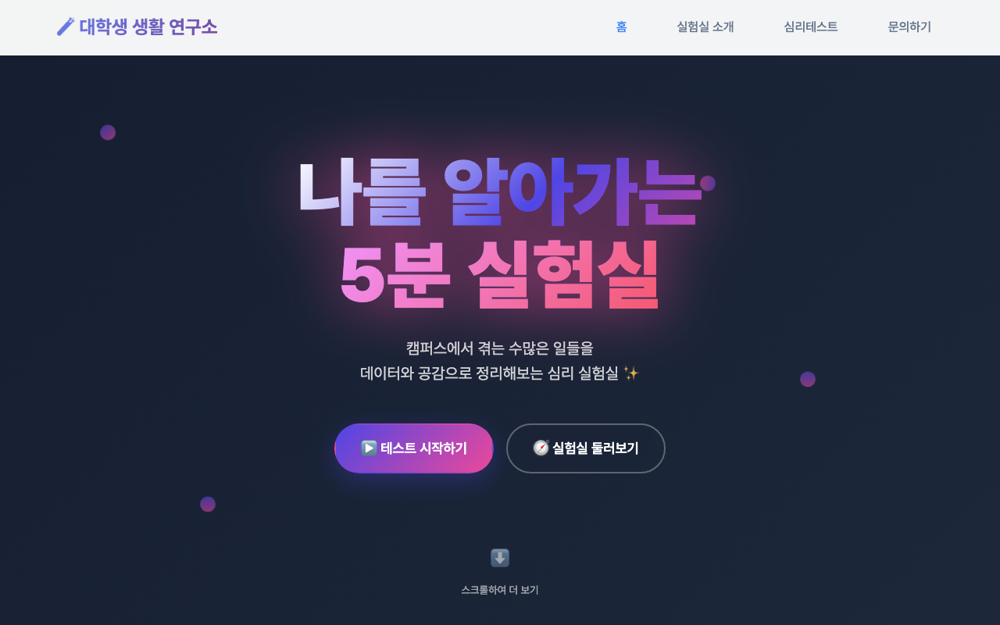
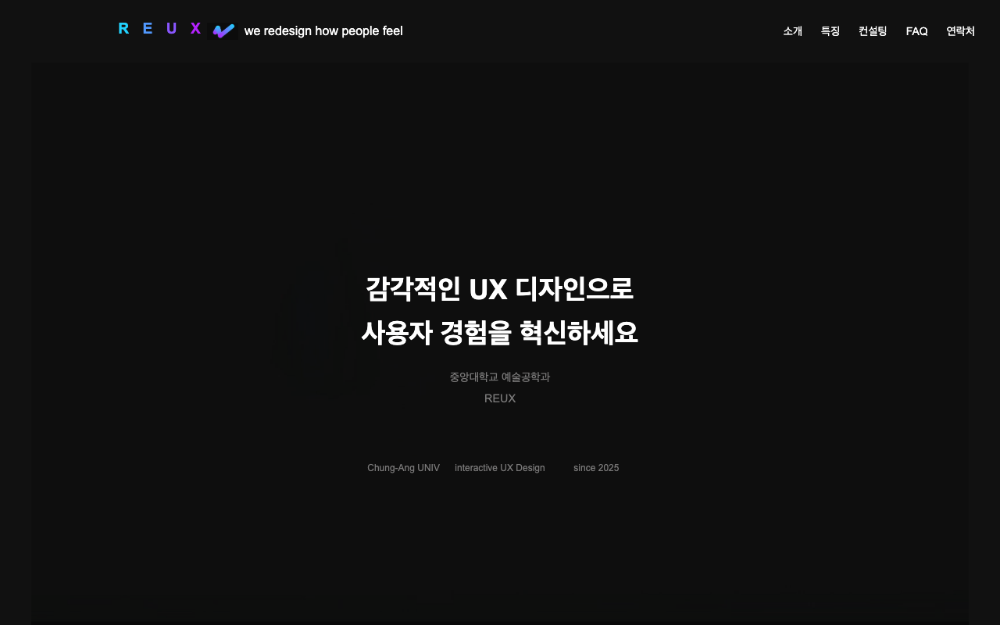

Projects
Things I have designed and built outside of research papers — interactive websites, apps and data systems. Research projects are on the Research page.
Design & Build
FreeForm
Weight-training feedback app that reads knee-mounted IMU sensors in real time and scores squat form — left/right balance, range of motion and tempo consistency — with live warnings and per-rep reports.

Rehabilitation Clinic Database
Relational schema for the full workflow of a rehabilitation clinic — injuries as their own entity, time-based clinical tests, sessions, and prescribed versus performed exercises — designed for analysis rather than as an app.
Experiment-Result Review Agent
An agent that gathers and checks many experiment-result CSV files, then writes a review spreadsheet and a lab-meeting report. Tested on public BIG-bench results, including duplicate rows and missing files.